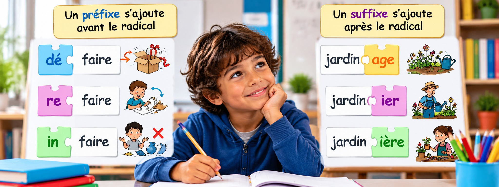

Je découvre

Je retiens : Un préfixe s’ajoute avant le radical. Un suffixe s’ajoute après le radical.
J'observe les exemples, puis je fais les défis. Une réponse incorrecte n'empêche jamais de réessayer.
À toi de jouer !
Compétence VOC-P2-03 · Activité autonome sans cahier obligatoire · Les défis portent sur la reconnaissance et la compréhension ; l'emploi des mots en phrase peut être prolongé à l'écrit.